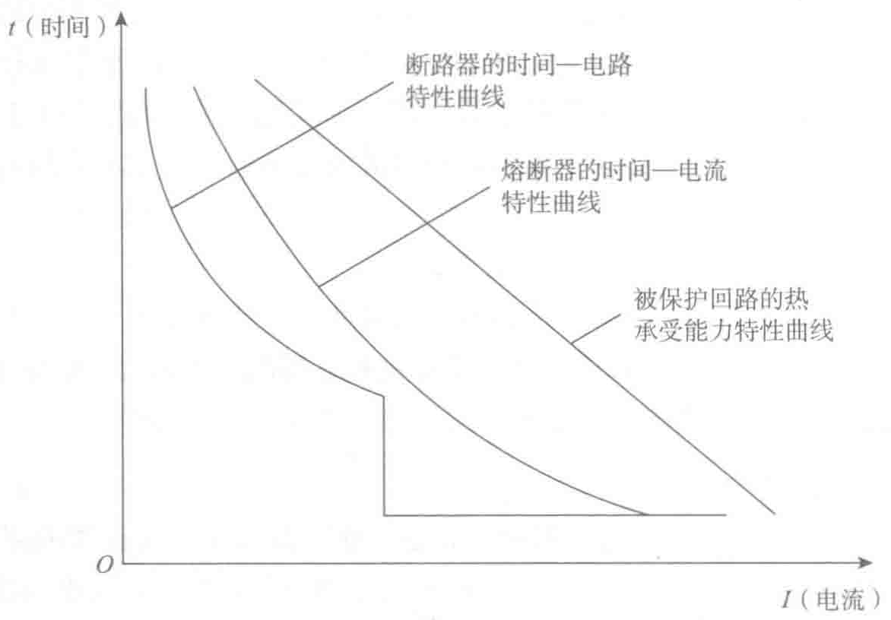

- B类断路器：通常指ACB，又称选择性型断路器。其脱扣特性由过载反延时脱扣、短路短延时脱扣和短路瞬动脱扣三段曲线组成。该类断路器通常作为变压器总保护开关、母排联络开关和主干线配电保护开关。为了确保整个配电系统供电的连续性和可靠性，需要短时耐受短路电流，让下级A类断路器切除短路故障，确保非故障线路连续供电。
4. 过电流保护电器时间—电流特性
除特殊情况外，回路都应装设断路器、熔断器之类的过电流保护电器来防范电气过载和短路引起的灾害。保护电器的时间—电流特性应与被保护回路导线热承受能力特性相配合，如图2-12所示。过载保护应为反时限特性，与被保护回路导体绝缘的热承受能力的反时限特性相对应。当过载电流的幅值过大和持续时间过长影响回路的绝缘性能时，它应在规定时间内动作，以防绝缘劣化导致短路的发生。短路保护应在回路内出现短路电流时尽快动作，以防止短路电流产生的异常高温或电弧、电火花烤燃可燃物质引起火灾，或防止短路电流产生的机械效应引起的灾害。
配电回路首端的过电流保护电器所保护的主要对象是电气线路，不一定要求它对所供设备也起过电流保护作用。

5. 短路保护动作的选择性
在低压电气装置设计中如何保证短路保护上下级动作的选择性，以避免越级跳闸引起大面积停电事故是相对复杂的问题。即使安装带有短延时动作的三段保护的断路器，也不能完全避免越级跳闸。这是因为当故障回路阻抗小时，下级回路的短路电流甚大，超过了上级断路器瞬动防护的整定值，瞬动脱扣器越级动作而短延时保护不起作用。无选择性跳闸会导致停电范围扩大，使一些重要负荷突然断电，常因此引起重大事故。为此一些重要